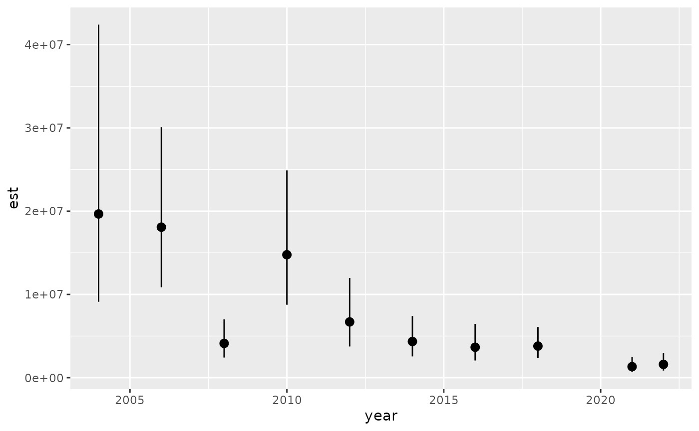
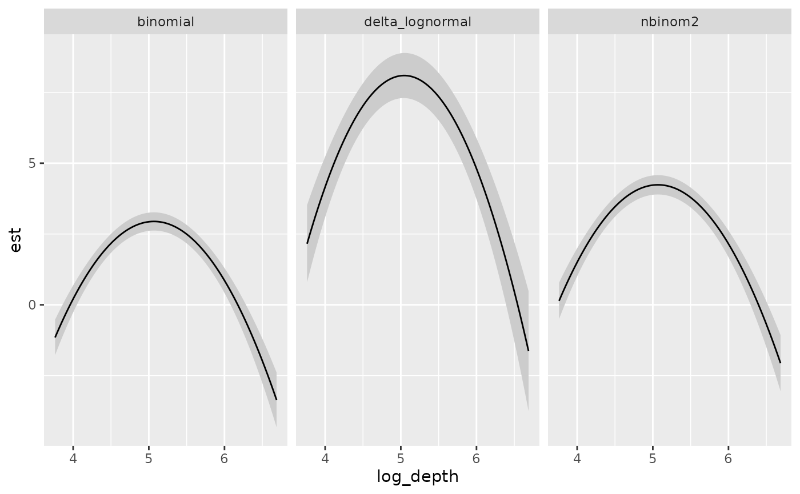

Fitting multiple data types at once with sdmTMB
Source:vignettes/articles/multi-family.Rmd
multi-family.RmdOverview
This vignette shows how to fit a multi-family model where each row can use a different likelihood family. See Grüss & Thorson (2019) for the theory and citation for doing this in the context of fisheries survey data and for the context of including continuous positive data with Poisson-link families.
Multi-family models are experimental. The supported
functions that work with multi-family models is deliberately small (fit,
predict(), simulate()/DHARMa,
tidy()/print(), and index-style derived
quantities on a single-family grid); see Current limitations for the full
list.
We will use the built-in dogfish dataset, but we’ll turn
some rows into encounter/non-encounter and some into a count, just for
the sake of an example. In reality, these are intended to come from
different surveys or data sources.
We will:
- Start with the
dogfishdataset (catch weight), - Create three response types (binary, counts, and continuous),
- Fit a multi-family model with
binomial(cloglog),nbinom2(), anddelta_lognormal(type = "poisson-link"), - Use
log(area_swept)as an offset.
Important: only some families and links make sense to fit like this. Here, we make sure to use a cloglog link for the binomial and a Poisson-link for the delta-lognormal. The first linear predictor will represent an underlying (log) abundance. The binomial data observe that as a thinned count process via the cloglog. The NB2 data observe that as a count. The delta-lognormal data observe that as the ‘group’ count part of the Poisson-link formulation. The second linear predictor is then the ‘weight per group’ part of the Poisson-link formulation.
Data prep
Here we’ll create some fake count and encounter data from a dataset of catch weight for dogfish.
library(dplyr)
library(sdmTMB)
library(ggplot2)
set.seed(123)
data(dogfish, package = "sdmTMB")
dat <- dogfish |>
mutate(
log_depth = log(depth),
data_type = sample(
c("binomial", "nbinom2", "delta_lognormal"),
size = n(),
replace = TRUE
)
)
# Start from catch_weight and create:
# - binomial encounter indicator (0/1)
# - nbinom2 counts (scaled from catch_weight)
# - delta_lognormal response (raw catch_weight)
dat <- dat |>
mutate(
response = catch_weight,
present_binom = as.integer(catch_weight > 0),
response = ifelse(
data_type == "binomial",
present_binom,
response
),
response = ifelse(
data_type == "nbinom2",
pmax(0L, round(catch_weight / 10)),
response
)
)
dat |>
count(data_type)
#> # A tibble: 3 × 2
#> data_type n
#> <chr> <int>
#> 1 binomial 484
#> 2 delta_lognormal 499
#> 3 nbinom2 475Model fit
We fit a multi-family model by passing a named list of families and a
distribution_column that maps each row to a family name.
Binomial would typically use a complementary log-log link for these
types of integrated models. We also include a monitoring-program
catchability effect using factor(data_type) in the first
linear predictor, following the integrated monitoring programs approach
described in Grüss and Thorson (2019).
Note that only delta_lognormal() has 2nd linear
predictor, so we drop factor(data_type) in the 2nd set of
main effects so the model is identifiable:
family_list <- list(
binomial = binomial(link = "cloglog"),
nbinom2 = nbinom2(),
delta_lognormal = delta_lognormal(type = "poisson-link")
)
mesh <- make_mesh(dat, c("X", "Y"), cutoff = 10)
fit <- sdmTMB(
formula = list(
response ~ factor(data_type) + as.factor(year) + poly(log_depth, 2),
response ~ factor(year) + poly(log_depth, 2) # omit factor(data_type) for the delta-positive component
),
data = dat,
family = family_list,
distribution_column = "data_type",
offset = log(dat$area_swept),
spatial = "off",
spatiotemporal = "off", # just for vignette building speed
time = "year",
mesh = mesh
)
fit
#> Model fit by ML ['sdmTMB']
#> Formula: list(response ~ factor(data_type) + as.factor(year) + poly(log_depth, 2), res...
#> Mesh: mesh (isotropic covariance)
#> Time column: character
#> Data: dat
#> Family: Multi-family (distribution column = 'data_type')
#>
#> Linear predictor 1: -----------------------------------
#>
#> Conditional model:
#> coef.est coef.se
#> (Intercept) 2.28 0.16
#> factor(data_type)delta_lognormal -0.04 0.09
#> factor(data_type)nbinom2 1.29 0.12
#> as.factor(year)2006 0.65 0.20
#> as.factor(year)2008 0.45 0.20
#> as.factor(year)2010 0.75 0.19
#> as.factor(year)2012 -0.19 0.19
#> as.factor(year)2014 -0.15 0.20
#> as.factor(year)2016 0.16 0.20
#> as.factor(year)2018 0.15 0.18
#> as.factor(year)2021 -0.88 0.21
#> as.factor(year)2022 -0.26 0.20
#> poly(log_depth, 2)1 2.19 1.91
#> poly(log_depth, 2)2 -31.90 2.25
#>
#>
#> Linear predictor 2: -----------------------------------
#>
#> Conditional model:
#> coef.est coef.se
#> (Intercept) 4.88 0.39
#> factor(year)2006 -0.74 0.46
#> factor(year)2008 -2.01 0.46
#> factor(year)2010 -1.03 0.46
#> factor(year)2012 -0.89 0.48
#> factor(year)2014 -1.36 0.46
#> factor(year)2016 -1.85 0.48
#> factor(year)2018 -1.79 0.45
#> factor(year)2021 -1.82 0.48
#> factor(year)2022 -2.25 0.49
#> poly(log_depth, 2)1 -2.16 4.20
#> poly(log_depth, 2)2 -16.02 4.44
#>
#> Families:
#> Linear predictor 1 Linear predictor 2 Dispersion param
#> binomial(cloglog)
#> nbinom2(log) 0.27
#> binomial(log) lognormal(log) 1.53
#>
#> ML criterion at convergence: 3304.629
#>
#> See ?tidy.sdmTMB to extract these values as a data frame.Prediction grid and index
We can make predictions on the wcvi_grid and calculate
an annual index with get_index(). For a multi-family model,
newdata must include the distribution_column
to indicate which family to use for each row. We should use a single
family for the index so that we are calculating the index for one data
type/survey. Here we calculate the index for the delta-lognormal
component. I.e., we are calculating a biomass index.
years <- sort(unique(dat$year))
nd <- replicate_df(wcvi_grid, "year", years) |>
mutate(
log_depth = log(depth),
data_type = "delta_lognormal",
area_swept = 1, # 1 km^2, i.e. offset = log(1) = 0
cell_area = 4 # 2 km x 2 km here
)
index <- get_index(
fit,
newdata = nd,
offset = log(nd$area_swept),
area = "cell_area"
)
head(index)
#> year est lwr upr log_est se se_natural type
#> 1 2004 19662959 9117796 42404100 16.79425 0.3921034 7709912 index
#> 2 2006 18080450 10863955 30090578 16.71034 0.2598930 4698982 index
#> 3 2008 4118518 2420208 7008567 15.23100 0.2712499 1117147 index
#> 4 2010 14768665 8761005 24895943 16.50802 0.2664320 3934845 index
#> 5 2012 6699294 3748556 11972752 15.71751 0.2962459 1984638 index
#> 6 2014 4347924 2554680 7399926 15.28521 0.2713170 1179666 index
ggplot(index, aes(year, est)) +
geom_pointrange(aes(ymin = lwr, ymax = upr))
Prediction standard errors
Multi-family models support standard errors via
se_fit = TRUE when making predictions. Standard errors are
computed for each row using TMB’s delta method in link space.
You can get standard errors when the prediction grid contains multiple families. Each row’s SE corresponds to that row’s specific prediction and family:
# Prediction grid with mixed families
nd <- data.frame(log_depth = seq(
log(min(dogfish$depth)),
log(max(dogfish$depth)),
length.out = 100
))
nd$year <- dogfish$year[1] # pick a year here
nd_mixed <- replicate_df(
nd, "data_type",
c("binomial", "nbinom2", "delta_lognormal")
)
pred_mixed <- predict(
fit,
newdata = nd_mixed,
re_form = NA,
se_fit = TRUE,
type = "link"
)
head(pred_mixed)
#> log_depth year data_type est est_se est1 est2
#> 1 3.761200 2004 binomial -1.1518911 0.3135759 -1.1518911 NA
#> 2 3.790767 2004 binomial -0.9686105 0.3028221 -0.9686105 NA
#> 3 3.820335 2004 binomial -0.7895247 0.2924645 -0.7895247 NA
#> 4 3.849902 2004 binomial -0.6146336 0.2825078 -0.6146336 NA
#> 5 3.879469 2004 binomial -0.4439373 0.2729568 -0.4439373 NA
#> 6 3.909036 2004 binomial -0.2774358 0.2638160 -0.2774358 NASEs are computed for each row according to its family
ggplot(pred_mixed, aes(log_depth, est)) +
geom_ribbon(aes(ymin = est - 2 * est_se, ymax = est + 2 * est_se), fill = "grey80") +
geom_line() +
facet_wrap(~data_type)
Important notes on standard errors
Link space: Standard errors are always in link space. For non-multi-family models,
type = "response"withse_fit = TRUEwill return an error with a message.Different link spaces per row: When your prediction grid contains multiple families, the
est_secolumn contains SEs in potentially different link spaces (e.g., logit for binomial rows, log for count families). This is fine because the SEs are row-specific and correspond to each row’s prediction.Delta families: For delta family rows, the combined prediction
esthas a standard error that accounts for uncertainty in both the encounter and positive components, computed using TMB’s delta method. This SE is generally different from either component’s SE alone (est1_seorest2_se). Theestis presented in log space.
Current limitations
Multi-family models are intended to support the main fit, prediction, simulation, and index workflows. Some downstream helpers are still intentionally unsupported.
For residual diagnostics, the supported approach is simulation-based
residuals with [simulate.sdmTMB()] and [dharma_residuals()]. This works
for multi-family models and is the recommended workaround for the
unsupported residuals.sdmTMB() method.
| Function or feature | Multi-family status | Workaround or note |
|---|---|---|
residuals() |
Not supported | Use
simulate(fit, nsim = ..., type = "mle-mvn") |> dharma_residuals(fit)
for simulation-based residual diagnostics. |
predict(..., type = "response", se_fit = TRUE) |
Not supported | Use type = "link", se_fit = TRUE, or use
predict(..., nsim = ..., type = "response") and summarize
draws on the response scale. |
sigma() |
Not supported | Inspect family-specific parameters with tidy() or model
summaries instead. |
deviance() |
Not supported | Use likelihood-based comparisons, simulation-based checks, or out-of-sample predictive checks instead. |
project() |
Not supported | Predict on the target grid directly with predict() and
include distribution_column in newdata. |
emmeans() |
Not supported | Use predict() on custom newdata grids and
summarize contrasts manually. |
plot_smooth() |
Not supported | Use direct predict() calls on custom grids or other
custom plotting workflows. |
visreg::visreg(), visreg_delta()
|
Not supported | Use direct predict() calls on custom grids. |
spread_sims() / gather_sims()
|
Not supported | Use predict(..., nsim = ...) or simulate()
draws directly. |
sdmTMB_cv() |
Not supported | Roll cross validation by hand. |
cAIC() |
Not supported | Use AIC() (marginal) or likelihood-based comparisons
instead. |
do_index = TRUE inside sdmTMB()
|
Not supported | Fit first, then call get_index(fit, newdata = ...) with
the prediction grid and distribution_column. |
dispformula |
Not supported | Use dispformula = ~ 1. If your main goal is to allow
different family-level auxiliary parameters across data sources (for
example separate phi values), one workaround is to define
separate named entries in family = list(...) even when they
use the same likelihood family/link, and route rows with
distribution_column. |
covariate_diffusion |
Not supported | No direct workaround within multi-family models yet. |
| Families outside the supported multi-family set | Not supported | Multi-family mode currently supports gaussian(),
binomial(), poisson(),
nbinom1()/nbinom2(), tweedie(),
betabinomial(), and delta families built on Gamma,
lognormal, or gengamma (standard or Poisson-link). Other families
(e.g. _mix(), ordbeta(),
student()) can still be fit as ordinary single-family
models. |